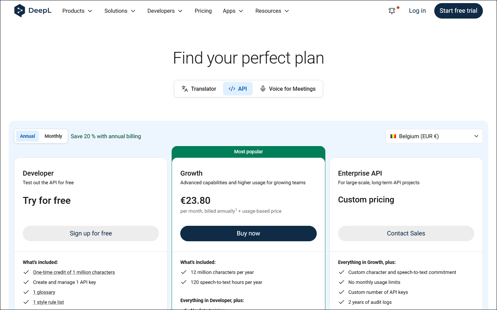
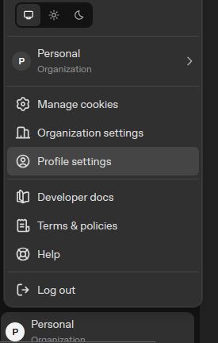
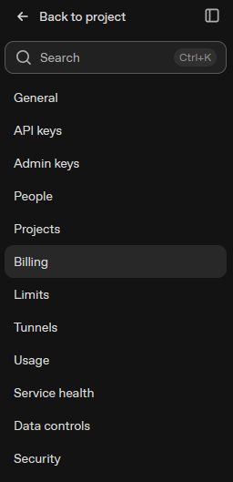
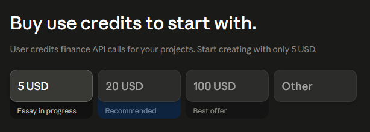

Translation providers
DeepL
Used for: high-quality machine translation (supports formality).
- Sign up for the API at https://www.deepl.com/pro-api. In the Developer plan card, choose
Sign up for free. DeepL asks you to verify your email, then to complete a payment-card
verification. The card check is used to validate the account, but the Developer plan is not charged.
The free Developer plan includes a one-time credit of 1,000,000 characters.

- Open https://www.deepl.com/your-account/keys (Account ▸ API Keys) and copy your
Authentication Key.

- Paste it into SubVox Pro (Settings ▸ DeepL). SubVox Pro handles the Free vs Pro endpoint automatically.
Help: https://support.deepl.com/hc/en-us/articles/360020695820-API-key-for-DeepL-API
Google Cloud Translation
Used for: machine translation.
- Open the Google Cloud Console at https://console.cloud.google.com and create (or pick) a project. New Google Cloud accounts get $300 in trial credits (90 days), and Cloud Translation includes 500,000 free characters/month. A billing account is required even on the free tier.
- In APIs & Services ▸ Library, search Cloud Translation API and click Enable.
- In APIs & Services ▸ Credentials, click Create credentials ▸ API key. Copy the key (and optionally restrict it to the Cloud Translation API).
- Paste it into SubVox Pro (Settings ▸ Google Translate).
Tip: set a quota/budget alert to avoid surprises once the trial credits run out.
OpenAI
Used for: speech-to-text, LLM translation (and word-style propagation across languages) and text-to-speech dubbing. One key covers all three.
- Create an account at https://platform.openai.com or sign in with an existing OpenAI account.

- In your project sidebar, open API Keys.

- Click Create new secret key.

- Name the key if you want, keep the correct project selected, choose the permissions you need, then
click Create secret key.

- Copy the key immediately. OpenAI shows the full secret only once; after closing this dialog, you
cannot reveal it again.

- Add prepaid credits from https://platform.openai.com/settings/organization/billing/overview.
You can also open the account menu, go to Organization settings or Profile settings, then
choose Billing in the settings sidebar.


- On the Billing overview, click Add to credit balance. API calls draw from this balance.

- Enter the amount to add, choose or add a payment method, then click Continue. The minimum top-up
shown in the platform is usually $5.

- Paste the secret key into SubVox Pro (Settings ▸ OpenAI). Pick the model in the translation panel. For dubbing, pick OpenAI as the provider in the Text-to-Speech tab, then the model: gpt-4o-mini-tts (13 voices, follows the voice direction), tts-1 (fast) or tts-1-hd (higher quality) — the last two offer 9 voices and ignore the voice direction. For transcription, pick OpenAI in the Speech-to-Text tab, then the model.
Transcription models — read this before picking one.
gpt-transcribe(default),gpt-4o-transcribe,gpt-4o-mini-transcribe: the best transcript (spelling, punctuation), but the OpenAI API returns no word timestamps for this family. SubVox Pro spreads the words over the sentence segments when there are any, over the whole clip otherwise, like importing a.txt: the lines are right, their timings are an estimate to nudge on the timeline.whisper-1: real word-level timings. Its words come back without punctuation, so SubVox Pro re-applies the punctuated transcript over the timed words.- The other providers (AssemblyAI, Gladia, Deepgram, Speechmatics, ElevenLabs, Rev AI, local Whisper and Parakeet) return punctuated word timings directly: prefer them when timing matters.
The transcription endpoint caps uploads at 25 MB.
OpenAI's usage policies require you to tell your players that the voices they hear are AI-generated and not human — for example in the game's credits or store page. TTS pricing: https://openai.com/api/pricing
Anthropic (Claude)
Used for: LLM translation (and word-style propagation).
- Create an account at https://console.anthropic.com or sign in with an existing Anthropic account.

- Buy usage credits before using the API. Anthropic is prepaid; without credits, API requests fail.
The console offers a low starting amount, usually 5 USD.

- In the Claude Console sidebar, open API keys.

- Click Create key.

- Choose the workspace, name the key if you want, then click Add.

- Copy the generated key immediately. Anthropic says you will no longer be able to consult the
full key after this screen.

- Paste it into SubVox Pro (Settings ▸ Claude).
Google (Gemini)
Used for: LLM translation and text-to-speech dubbing (Gemini voices) — the easiest free option (no billing required). One key covers both.
- Go to Google AI Studio at https://aistudio.google.com and sign in with a Google account.

- Open API keys directly at https://aistudio.google.com/app/apikey, then click
Create an API key.

- Name the key if you want, choose or create a project, then create the key.

- Copy the API key from the details panel.

- The key then appears in the API keys list, where you can copy, inspect usage or configure billing later.

- Paste it into SubVox Pro (Settings ▸ Gemini). For dubbing, pick Gemini as the provider in the Text-to-Speech tab: it offers 30 multilingual voices (Kore, Puck, Leda…) and the voice direction button. Three models are available: gemini-3.1-flash-tts-preview (default, most natural), gemini-2.5-flash-preview-tts (half the price when billed) and gemini-2.5-pro-preview-tts (no free tier — it needs billing).
The free tier needs no billing but is rate-limited; the limits of each model are shown in AI Studio (Rate limit page). Text-to-speech has the tightest ones — only a few requests per minute and per day. SubVox Pro waits and retries when Google says how long to wait, and stops with a clear message once the daily quota is used up. Enabling billing on the key's project lifts these limits; nothing else changes in SubVox Pro. On the free tier, Google may use your prompts to improve its products.
DeepSeek
Used for: low-cost LLM translation (OpenAI-compatible API).
- Create an account at https://platform.deepseek.com or sign in with an existing DeepSeek account.
- DeepSeek is prepaid: open Top up in the platform and add a balance before using the API. Without credit, API requests fail.
- Open API keys (https://platform.deepseek.com/api_keys) and click Create new API key. Give it a
recognizable name such as
SubVoxPro, then copy the key immediately — the full key is shown only once. - Paste it into SubVox Pro (Settings ▸ DeepSeek). Pick the model in the translation panel.